knitr::opts_chunk$set(cache = TRUE, cache.lazy = FALSE, warning = FALSE,
message = FALSE, echo = TRUE, dpi = 180,
fig.width = 8, fig.height = 5)
pacman::p_load(knitr,tidyverse ,tidymodels,klaR, discrim, themis, finetune, earth, ranger)Regressão
dados_prontos <- readr::read_csv("dados_limpos.csv") %>%
dplyr::select(-1) Regressão
EDA
Vou começar essa tarefa com a seleção de recursos. Durante a limpeza dos dados eu cheguei a verificar os valores de correlação entre as variáveis numéricas, mas vamos avalia-las novamente e visualizar sua distribuição.
library(GGally)
dados_prontos %>%
tidyr::drop_na() %>%
dplyr::select(where(is.numeric)) %>%
ggpairs()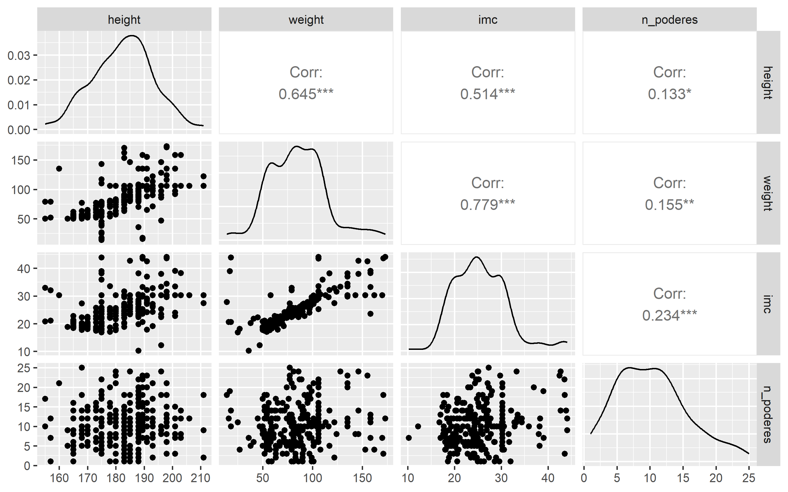
As curvas de densidade parecem seguir uma distribuição normal, exceto pela variável “n_poderes”, que exibe uma cauda mais longa. Notavelmente, a variável “n_poderes” não demonstra uma correlação significativa com as demais variáveis. Entretanto, “peso” e “altura”, “peso” e “IMC”, e “IMC” e “altura” exibem correlações notáveis. Os gráficos de dispersão apontam para uma relação linear entre essas variáveis.
Agora vamos verificar como é a distribuição do nosso alvo em relação as variáveis categóricas.
dados_prontos %>%
tidyr::drop_na() %>%
mutate(
gender = fct_lump(gender, n=10)
) %>%
ggplot(aes(gender,weight, color=gender))+
geom_boxplot()+
theme(legend.position = "none")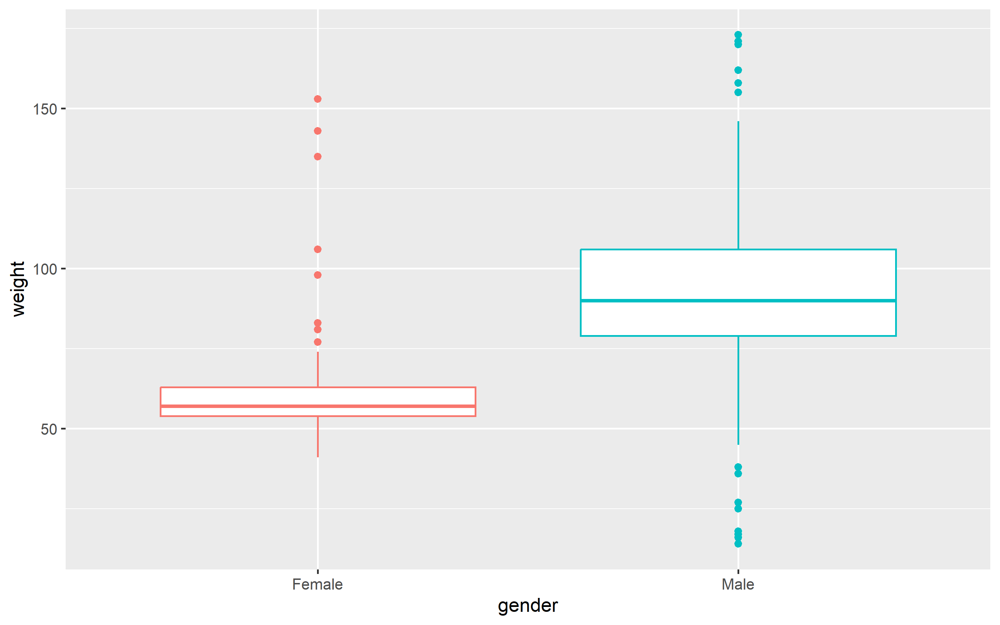
A variável “gênero” parece ser uma fonte promissora de informação para o nosso modelo.
dados_prontos %>%
tidyr::drop_na() %>%
mutate(
eye_color = fct_lump(eye_color, n=10)
) %>%
ggplot(aes(eye_color,weight, color=eye_color))+
geom_boxplot()+
theme(legend.position = "none")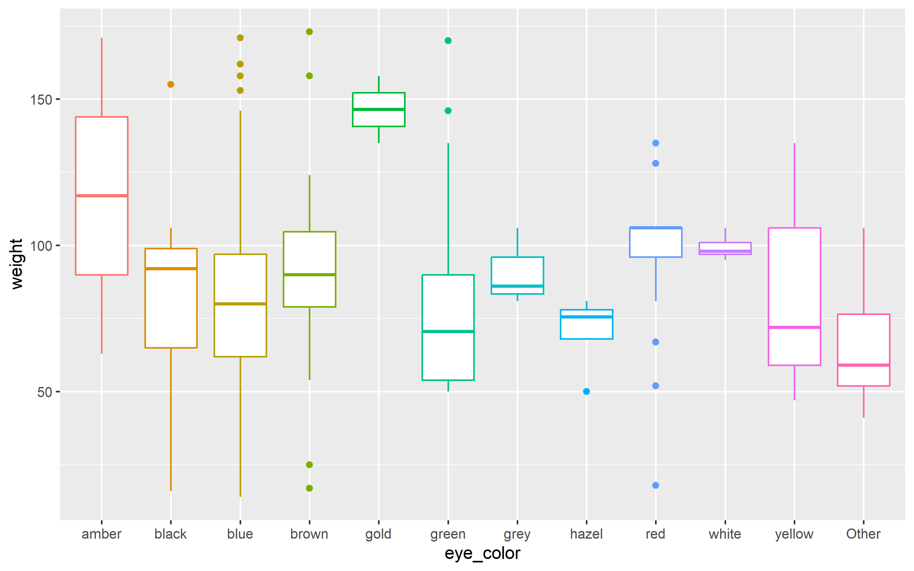
Apesar das limitações associadas à variável “cor dos olhos”, ela também parece ser uma valiosa fonte de informações.
dados_prontos %>%
tidyr::drop_na() %>%
mutate(
race = fct_lump(race, n=10)
) %>%
ggplot(aes(race,weight, color=race))+
geom_boxplot()+
theme(legend.position = "none")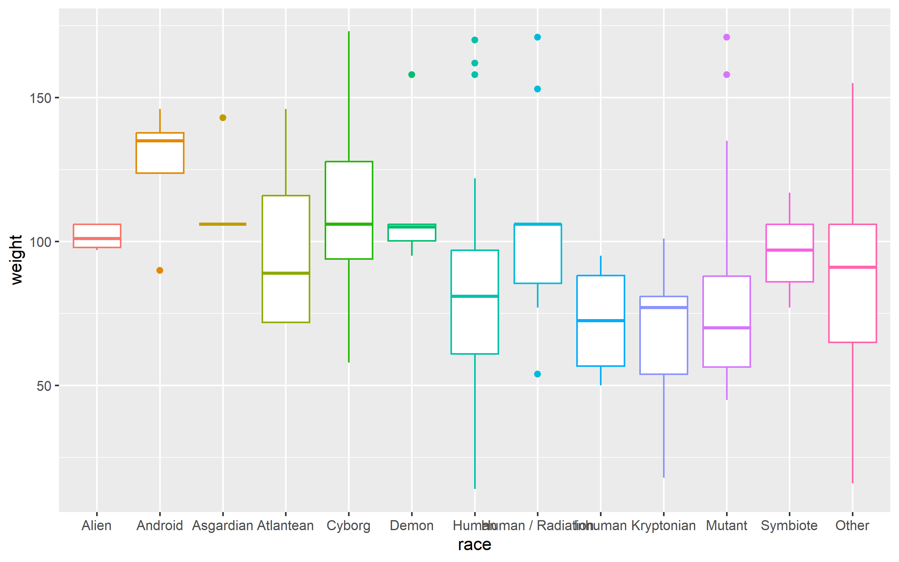
As médias dos valores não parecem exibir grandes discrepâncias ao analisarmos as diferentes raças. É importante ter em mente que algumas categorias têm amostragens reduzidas.
dados_prontos %>%
tidyr::drop_na() %>%
mutate(
hair_color = fct_lump(hair_color, n=10)
) %>%
ggplot(aes(hair_color,weight, color=hair_color))+
geom_boxplot()+
theme(legend.position = "none")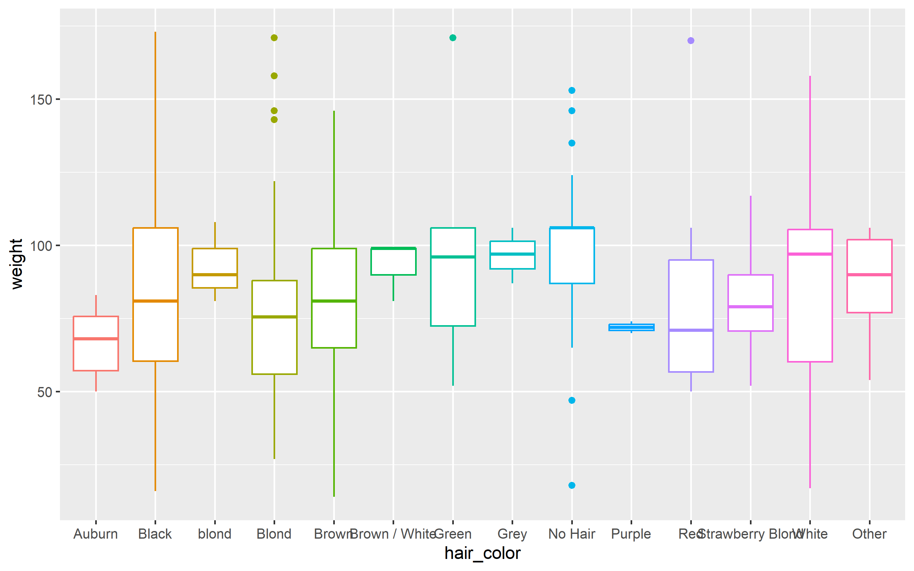
Da mesma forma que a variável anterior, a cor dos cabelos não parece fornecer muita informação em relação ao peso.
dados_prontos %>%
tidyr::drop_na() %>%
mutate(
publisher = fct_lump(publisher, n=10)
) %>%
ggplot(aes(publisher,weight, color=publisher))+
geom_boxplot()+
theme(legend.position = "none")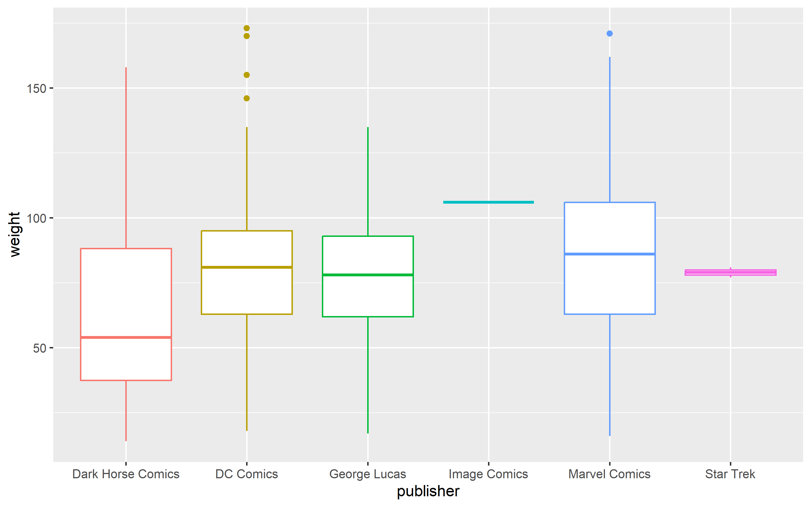
A variável “editora” também não parece ser muito informativa.
dados_prontos %>%
tidyr::drop_na() %>%
mutate(
alignment = fct_lump(alignment, n=10)
) %>%
ggplot(aes(alignment,weight, color=alignment))+
geom_boxplot()+
theme(legend.position = "none")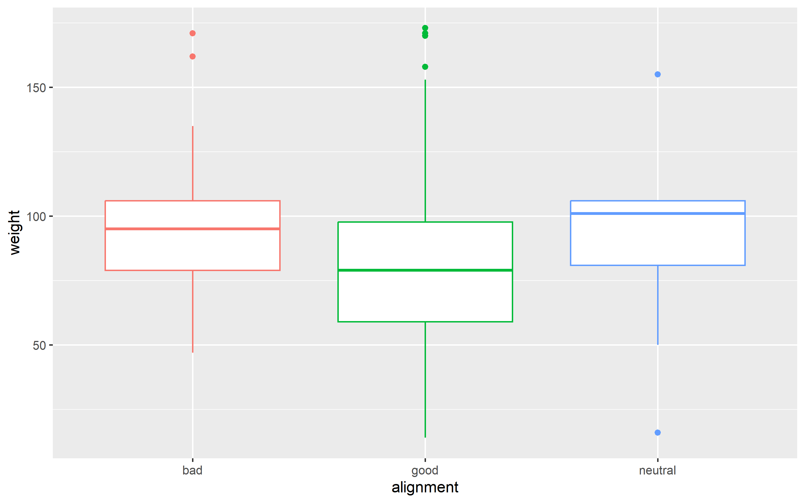
Não parece que o alinhamento tem relação com o peso.
dados_prontos %>%
tidyr::drop_na() %>%
mutate(
categoria_imc = fct_lump(categoria_imc, n=10)
) %>%
ggplot(aes(categoria_imc,weight, color=categoria_imc))+
geom_boxplot()+
theme(legend.position = "none")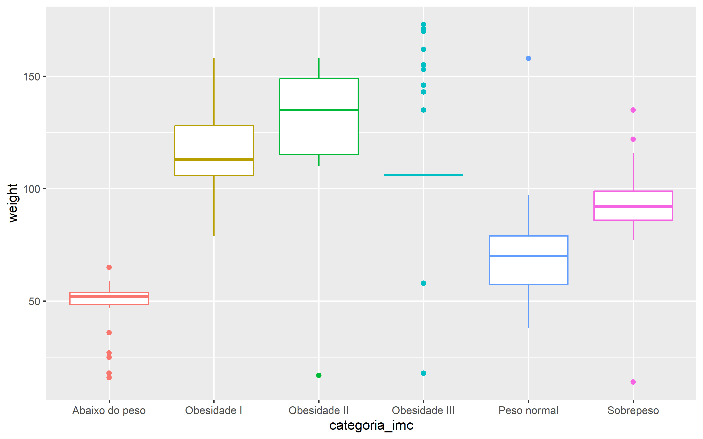
É evidente que essas categorias têm uma forte relação com o peso dos personagens, uma vez que foram construídas a partir das variáveis de peso e altura.
dados_prontos %>%
tidyr::drop_na() %>%
mutate(
across(where(is.logical), as.factor),
super_strength = fct_lump(super_strength)
) %>%
ggplot(aes(super_strength,weight, color=super_strength))+
geom_boxplot()+
theme(legend.position = "none")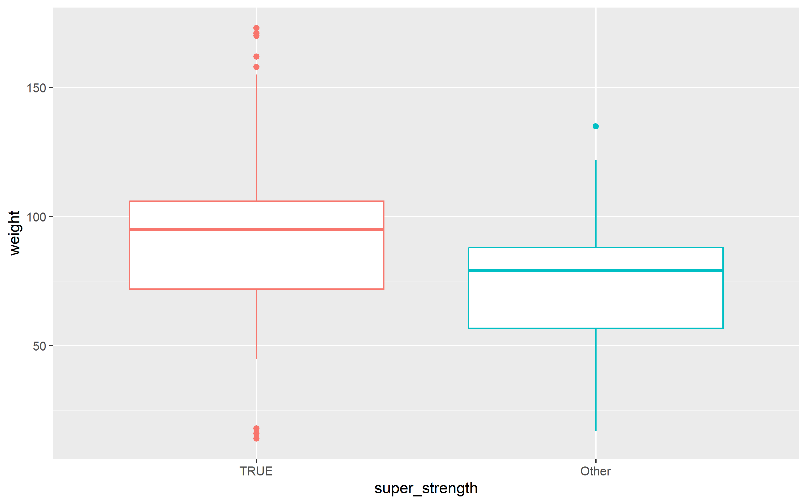
Não irei apresentar todos os resultados, mas de maneira geral, as variáveis relacionadas ao tipo de poder não parecem ser informativas.
As únicas variáveis que aparentemente podem ser úteis são “super_strength”, “invulnerability” e “durability”.
Vamos ver em relação ao número de poderes que cada personagem possui.
dados_prontos %>%
tidyr::drop_na() %>%
mutate(
n_poderes = as.factor(n_poderes),
n_poderes = fct_lump(n_poderes, n=10)
) %>%
ggplot(aes(n_poderes,weight, color=n_poderes))+
geom_boxplot()+
theme(legend.position = "none")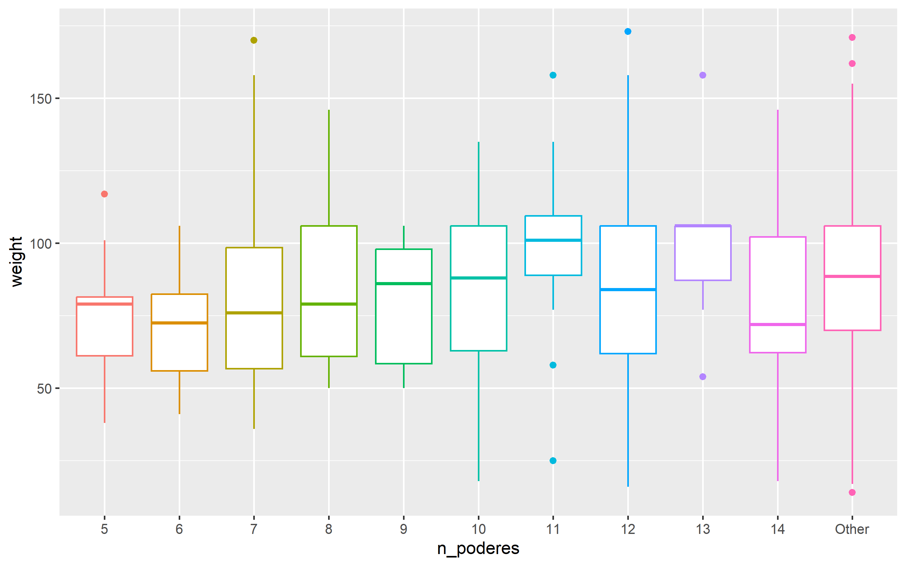
A quantidade de poderes de cada personagem aparentemente não possui relação com o peso do personagem. No entanto, essa conclusão pode necessitar de uma análise mais aprofundada. Por enquanto, não vou criar uma variável categórica que represente o número de poderes por personagem.
construindo modelo
Vou começar selecionando apenas as variáveis que foram escolhidas durante a análise exploratória dos dados.
dados_regre <- dados_prontos %>%
dplyr::select(weight,imc,height,categoria_imc,
super_strength,invulnerability,
gender,eye_color) %>%
mutate(
across(where(is.logical), as.character)
) Divisão Treino/Teste
Esta etapa segue as mesmas especificações, com uma proporção de 70% para treinamento e 30% para teste.
set.seed(123)
heroes_split <- initial_split(dados_regre, strata = "weight", prop = 0.7)
train <- training(heroes_split)
test <- testing(heroes_split)Validação cruzada
Criando as partições para executar a validação cruzada.
set.seed(456)
cv_folds <- vfold_cv(train, strata = "weight")
cv_folds# 10-fold cross-validation using stratification
# A tibble: 10 × 2
splits id
<list> <chr>
1 <split [400/47]> Fold01
2 <split [400/47]> Fold02
3 <split [400/47]> Fold03
4 <split [401/46]> Fold04
5 <split [403/44]> Fold05
6 <split [403/44]> Fold06
7 <split [404/43]> Fold07
8 <split [404/43]> Fold08
9 <split [404/43]> Fold09
10 <split [404/43]> Fold10Especificações dos dados
Já removi as características que considerei não relevantes. Agora, vamos detalhar os passos deste procedimento.
- Tratamento dos valores ausentes nas variáveis preditoras e no alvo.
- Normalização aplicada apenas às variáveis preditoras.
- Abordagem dos dados faltantes nas variáveis categóricas por meio de um modelo de árvore bagged.
- Agregação das categorias pouco frequentes sob o rótulo “outro”.
- Utilização da codificação one-hot nas variáveis categóricas.
(Neste ponto, surge a dúvida sobre a aplicação da codificação one-hot para a variável “categoria_icm”, que possui uma ordem natural)
base_rec <-
recipe(weight ~.,data = train) %>%
step_impute_mean(all_numeric()) %>%
step_normalize(all_numeric_predictors()) %>%
step_impute_bag(all_nominal_predictors()) %>%
step_other(all_nominal_predictors(), threshold = 0.02) %>%
step_dummy(all_nominal_predictors(), one_hot = TRUE)
base_rec %>% prep() %>% bake(new_data = NULL) #%>% skimr::skim()# A tibble: 447 × 23
imc height weight categoria_imc_Abaixo.do.peso categoria_imc_Obesidade.I
<dbl> <dbl> <dbl> <dbl> <dbl>
1 -0.948 -1.87 57 0 0
2 -1.07 -2.09 54 0 0
3 -1.35 -0.973 57 0 0
4 -0.779 -1.87 59 0 0
5 -1.39 -2.09 50 0 0
6 -1.33 -1.53 54 0 0
7 0 0 85.1 0 0
8 -1.18 -1.87 54 0 0
9 -1.33 -1.87 52 0 0
10 -0.800 -1.53 61 0 0
# ℹ 437 more rows
# ℹ 18 more variables: categoria_imc_Obesidade.III <dbl>,
# categoria_imc_Peso.normal <dbl>, categoria_imc_Sobrepeso <dbl>,
# categoria_imc_other <dbl>, super_strength_FALSE. <dbl>,
# super_strength_TRUE. <dbl>, invulnerability_FALSE. <dbl>,
# invulnerability_TRUE. <dbl>, gender_Female <dbl>, gender_Male <dbl>,
# eye_color_black <dbl>, eye_color_blue <dbl>, eye_color_brown <dbl>, …Especificações do modelo
Para esta tarefa de regressão, vou adotar uma abordagem ligeiramente distinta. Em vez de selecionar um único modelo, vou elaborar “receitas” para três modelos diferentes e, em seguida, compará-los.
Os modelos selecionados são Random Forest, MARS (Multivariate Adaptive Regression Splines) e Regressão Linear.
rf_spec <-
rand_forest(trees = 1e3) %>%
set_mode("regression") %>%
set_engine("ranger")
mars_spec <-
mars() %>%
set_mode("regression") %>%
set_engine("earth")
lm_spec <-
linear_reg()#usando o defoultCriando um fluxo de trabalho
Utilizando a função “workflow_set”, é possível ajustar todos os modelos de forma simultânea.
heroes_set <-
workflow_set(
list(base_rec),
list(rf_spec,mars_spec,lm_spec),
cross = FALSE#as receitas são específicas para os modelos
)
heroes_set# A workflow set/tibble: 3 × 4
wflow_id info option result
<chr> <list> <list> <list>
1 recipe_rand_forest <tibble [1 × 4]> <opts[0]> <list [0]>
2 recipe_mars <tibble [1 × 4]> <opts[0]> <list [0]>
3 recipe_linear_reg <tibble [1 × 4]> <opts[0]> <list [0]>Ajustando o modelo aos dados
Agora, ao empregar “workflow_map”, é possível aplicar todas as receitas desenvolvidas às partições de treinamento criadas.
doParallel::registerDoParallel()
set.seed(789)
heroes_rs <-
workflow_map(
heroes_set,
"fit_resamples",
resamples = cv_folds
)
heroes_rs# A workflow set/tibble: 3 × 4
wflow_id info option result
<chr> <list> <list> <list>
1 recipe_rand_forest <tibble [1 × 4]> <opts[1]> <rsmp[+]>
2 recipe_mars <tibble [1 × 4]> <opts[1]> <rsmp[+]>
3 recipe_linear_reg <tibble [1 × 4]> <opts[1]> <rsmp[+]>Avaliando os resultados
autoplot(heroes_rs)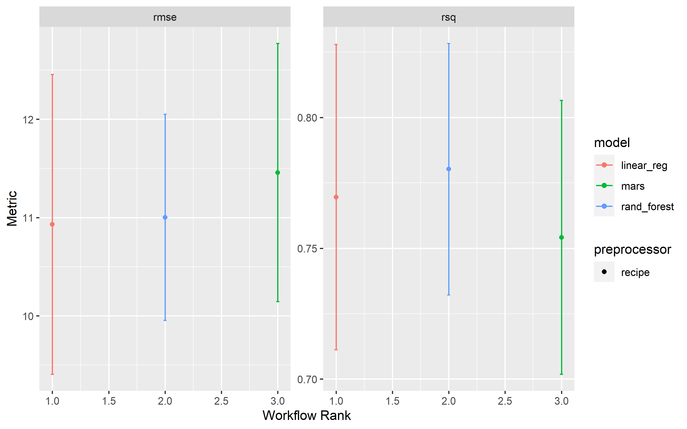
Os resultados apresentaram pouca diferença entre si, porém, o modelo Randon Forest mostrou uma leve vantagem. Apesar disso, vou optar por prosseguir com o modelo linear, já que ele é mais simples de interpretar. (E também porque os dados exibem uma relação linear)
collect_metrics(heroes_rs)# A tibble: 6 × 9
wflow_id .config preproc model .metric .estimator mean n std_err
<chr> <chr> <chr> <chr> <chr> <chr> <dbl> <int> <dbl>
1 recipe_rand_for… Prepro… recipe rand… rmse standard 11.0 9 0.638
2 recipe_rand_for… Prepro… recipe rand… rsq standard 0.780 9 0.0292
3 recipe_mars Prepro… recipe mars rmse standard 11.5 9 0.798
4 recipe_mars Prepro… recipe mars rsq standard 0.754 9 0.0318
5 recipe_linear_r… Prepro… recipe line… rmse standard 10.9 9 0.927
6 recipe_linear_r… Prepro… recipe line… rsq standard 0.770 9 0.0355Aqui, podemos avaliar as métricas de todos os modelos que foram ajustados. Conforme mencionei, optarei por seguir com o modelo linear.
final_fit <-
extract_workflow(heroes_rs, "recipe_linear_reg") %>%
fit(train)Vamos acessar os resultados do modelo e analisar a magnitude da influência de cada variável no peso dos personagens.
tidy(final_fit) # A tibble: 23 × 5
term estimate std.error statistic p.value
<chr> <dbl> <dbl> <dbl> <dbl>
1 (Intercept) 99.7 7.55 13.2 1.32e-33
2 imc 11.0 1.51 7.28 1.57e-12
3 height 7.08 0.854 8.29 1.43e-15
4 categoria_imc_Abaixo.do.peso -28.6 8.67 -3.30 1.05e- 3
5 categoria_imc_Obesidade.I -2.21 6.64 -0.332 7.40e- 1
6 categoria_imc_Obesidade.III -9.07 6.20 -1.46 1.44e- 1
7 categoria_imc_Peso.normal -19.1 7.46 -2.57 1.06e- 2
8 categoria_imc_Sobrepeso -13.7 6.74 -2.04 4.23e- 2
9 categoria_imc_other NA NA NA NA
10 super_strength_FALSE. -1.12 1.52 -0.736 4.62e- 1
# ℹ 13 more rowsOs resultados mostram na primeira coluna os coeficientes estimados para cada variável, indicando a magnitude e direção da influência no peso dos personagens. Os valores de erro padrão e estatística do teste auxiliam na avaliação da significância estatística das estimativas. Valores de valor p menores indicam uma maior evidência contra a hipótese nula de que o coeficiente é igual a zero. No entanto, observe que a variável “categoria_imc_other” possui valores ausentes (NA). Isso exige uma análise adicional para compreender seu impacto no modelo.
Respostas
- Qual algoritmo você escolheu e por quê?
Ao analisarmos as relações entre as variáveis contínuas e a variável alvo, é possível observar uma clara relação linear. No entanto, para esta tarefa, optei por realizar uma comparação entre três modelos distintos: regressão linear, Random Forest e MARS (Multivariate Adaptive Regression Splines).
- Como você avalia o desempenho do seu algoritmo neste caso?
Apesar de não ser o modelo que obteve o melhor resultado, a regressão linear demonstrou um ajuste satisfatório aos dados. Ela foi capaz de explicar um pouco mais de 75% da variação nos dados. Isso indica que o modelo está capturando adequadamente a relação entre as variáveis independentes e a variável dependente.
(As métricas dos modelos estão oscilando cada vez que eu gero o documento. Não tenho certeza do motivo, mas deve ser algum processo aleátorio interno dos modelos usados)